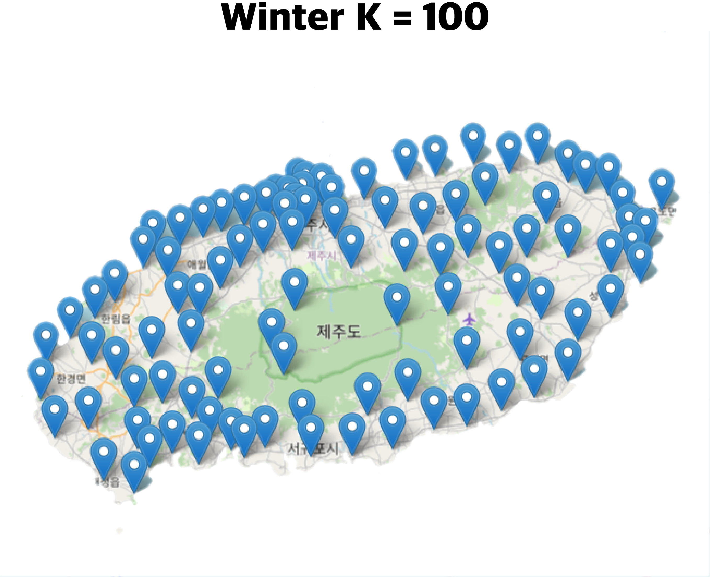
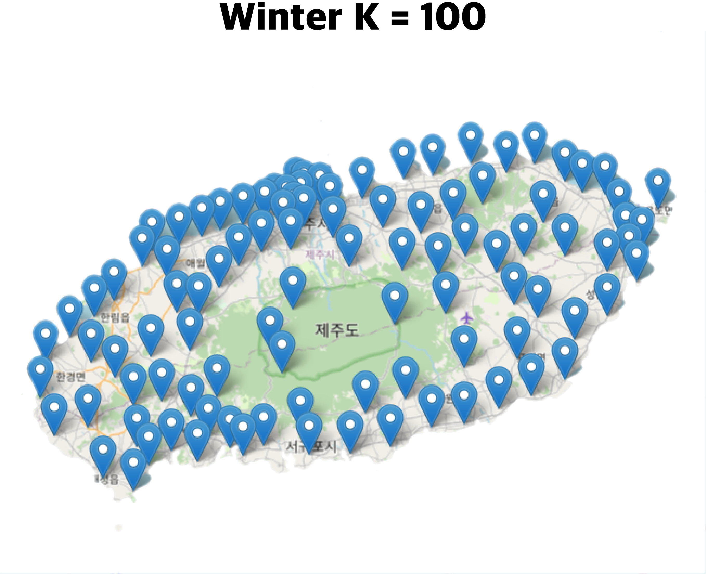

GPS와 위치 기반 서비스 (LBS)의 역사
History of
GPS and Location-Based Services (LBS)
GPS는 미국 국방부에서 개발된 위성 항법 시스템으로, 초기에
상업적으로 사용할 수 없었지만 2000년 이후에는 대중에게
열려 사용 가능해졌습니다. 이로 인해 위치 기반
서비스(LBS)에 대한 학계와 산업계의 관심이 크게
증가했습니다.
GPS is a satellite navigation
system developed by the U.S. Department of Defense that
was initially commercially unavailable but became
available to the public after 2000. This has led to a
significant increase in academic and industrial interest
in location-based services (LBS).
다양한 LBS 응용 분야
Various LBS Applications
GPS 디바이스, 스마트폰, 사물인터넷(IoT), 무선 통신 기술의
보급으로 다양한 LBS 분야가 등장했습니다. 이에는 네비게이션
서비스, 건강 관리 서비스, 위치 기반 게임 서비스 등이
포함됩니다.
With the spread of GPS devices, smartphones,
Internet of Things (IoT), and wireless communication
technologies, various LBS fields have emerged. This
includes navigation services, health care services,
location-based gaming services, and more.
위치 기반 추천 시스템 (LBRS)
Location-based
recommendation system (LBRS)
LBRS는 위치 정보와 사용자 선호도를 고려하여 도착지, 활동
등을 추천하는 서비스입니다. 연구자들은 RNN 및 기타 기술을
사용하여 모바일 사용자를 위한 LBRS를 개발하고, GPS 및 날씨
정보를 활용하여 은닉 마코프 모델(HMM)을 구축하여 날씨 예측
및 구매 아이템 추천과 같은 다양한 LBRS를 연구 및 개발하고
있습니다.
LBRS is a service that recommends
destinations, activities, etc. in consideration of
location information and user preferences. Researchers are
using RNN and other technologies to develop LBRSs for
mobile users, and using GPS and weather information to
build hidden Markov models (HMMs) to study and develop
various LBRSs such as weather prediction and purchase item
recommendations.

 
